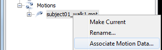
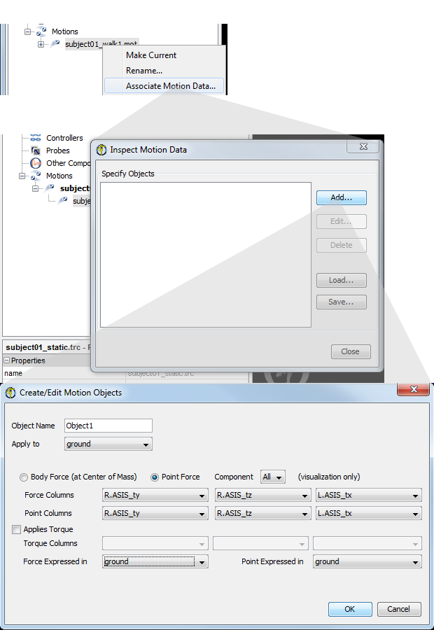

Once a motion is loaded, you can associate additional motion data with the loaded motion or add files to color the muscles in your model. Read more about each feature below:
Associate Motion Data
If you load a kinematics file for walking, you can associate the corresponding ground reaction force file or trc file with marker data. You can also use the associate feature to visualize the results of analyses, like a Joint Reactions Analysis or Induced Acceleration Analysis. To associate data from a motion file to a motion that is already loaded into OpenSim:
|  | Expand the Motions branch in the Navigator. Right mouse click on the desired motion and select Associate Motion Data... or Color Muscles from File... OpenSim will open a file browser, which you can use to select the desired motion file.
OpenSim will then load the data file (as in preview motion data) and try to guess based on the contents of the file what objects it contains and display these objects (either markers in trc file or forces extracted from an .mot file). The user can then revisit those guesses to affect the definition of these objects as described below. The user can also save the deifnition into an ExternalLoads file to be used by other tool |
|---|
Editing Motion Objects
|  | - To edit the configuration of motion data, expand the Motions Branch in the Navigator.
- Next, expand the current loaded motion (e.g. BothLegsWalk). You will see the motion data that you've associated. Right Click and select Edit Motion Objects...
- This will open the Inspect Motion Data window. In this window, you'll see any motion objects that OpenSim was able to automatically associate.
- Click to Highlight a motion object, then select Edit. Or if no objects were automatically generated, click Add to create a new one. You can have any number of motion objects for a given file with motion data.
- This will open the Create/Edit Motion Objects window. This panel is just like the one used to specify External Loads (see How to Use the Inverse Dynamics Tool). But in this case, it's being used to edit how the motion data's vectors are displayed.
- The Apply to drop down is not used for visualization.
- If you choose Body Force, the vector will be shown at the center of mass of the Body you select for Force Expressed In.
- If you choose Point Force, the vector will be shown at the point specified in Point Columns.
- You can choose to display all components of the vector or only one component (e.g. the X component), using the Component drop down.
- Specify the Force Columns and and Point Columns using the drop down menus.
- Use the Force Expressed In and Point Expressed In drop downs to choose which body the force vector and point should be visualized in.
- Click OK.
- Once you've specified a motion object, you can Save it to reuse later by clicking Save... This creates an xml configuration file for the motion data.
- You can load any existing motion data specification files by clicking Load... and selecting the desired file.
- Click Close when you are done editing. When you play the current motion, you should see a vector visualizing the motion object.
 | If you don't see the motion object you created, it might be because it is very small. Try changing the Force display size in the Property Editor. You can also change the color of vector, it's also possible that OpenSim couldn't automatically detect any known objects (markers or forces) in the file because the labels don't follow expected conventions. |
|
|---|
| The xml configuration file for visualizing motion data is the same as the one used to specify External Loads for Inverse Dynamics and other tools (see How to Use the Inverse Dynamics Tool). Note that the Applied to setting has no effect on visualization, but does affect applied External Loads. The Component selection used for visualization does not affect applied External Loads–all components selected are applied in Inverse Dynamics and other tools. |
Coloring Muscles from File
As of OpenSim 3.2, you can also associate a file with to dictate muscle coloring. This is useful, for example to visualize the activation results from Static Optimization.
The color data muscle be included in an OpenSim storage (.sto) file. The file should have columns with the muscles names of interest, with values (e.g., activations) ranging from 0 to 1. Muscles with a value of zero will appear blue. Muscles with a value of one or great will appear red. The file should have an overlapping time range.
As with Associate Motion Data above, you must first load a motion. Then you can right click on the motion, select Color Muscles From File... and choose the storage file with muscle color data. Now, when you playback the motion the muscles will be colored according to your storage file.
{kind=link}
{kind=link}